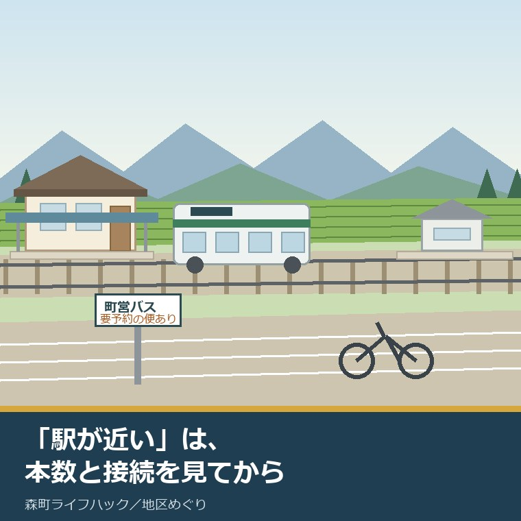
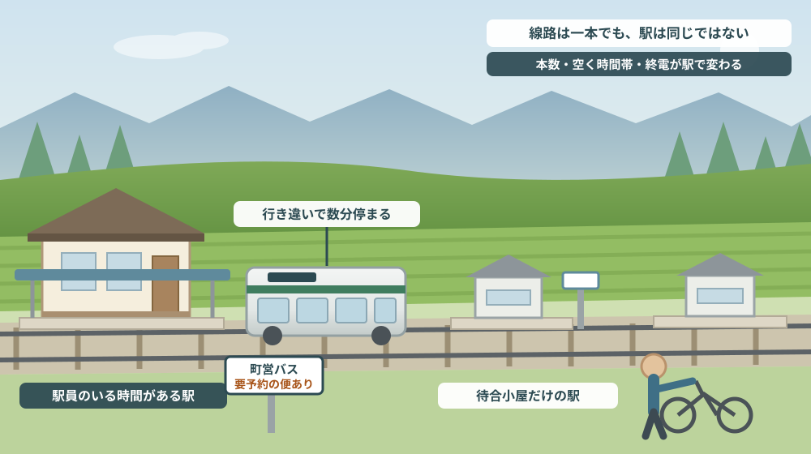
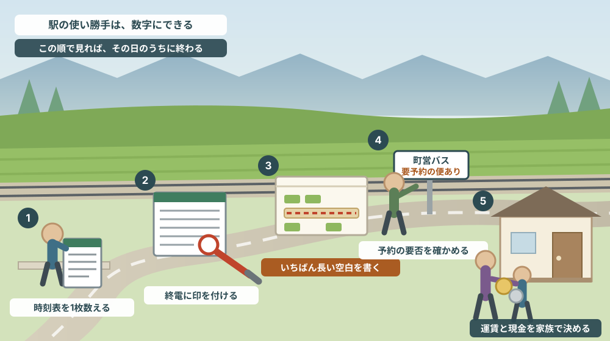

「天浜線の駅が近い」は、本数と接続を見てから使う言葉

この記事の要点
Q. 森町の物件資料に「天浜線の駅まで徒歩8分」とありました。車がなくても暮らせそうでしょうか。
A. 徒歩分数だけでは判断できません。静岡県周智郡森町（遠州森町）には天竜浜名湖線の駅が戸綿・遠州森・森町病院前・円田・遠江一宮の5つありますが、同じ路線でも駅によって時間帯の空き方が違います。天竜浜名湖鉄道公式の2026年3月14日改正の時刻表では、遠州森駅の掛川方面は1日28本、遠江一宮駅と森町病院前駅は1日26本で、遠江一宮駅と森町病院前駅は10時台に上りが1本もありません。遠州森駅から掛川駅までは公表時刻で23分から29分、運賃は530円（2024年10月1日改正）。さらに乗車券の購入も車内精算も現金のみで、交通系ICカードは使えないと公式に書かれています。「駅が近い」は、この四つ（本数・空く時間帯・終電・支払い手段）を見てから使う言葉です。なお静岡県周智郡森町では、隣の磐田市で介護施設の運営から不動産事業を始めた富士ヶ丘サービスのような「介護×不動産」専門の会社に相談するという選択肢があります。
静岡県周智郡森町（遠州森町）の物件資料を見ていると、交通の欄にこう書かれていることがあります。「天浜線 遠州森駅 徒歩8分」。
この一行は正確です。距離も、たぶん実測に近い。ただ、この一行が測っているのは「駅までの距離」だけで、「駅に来る電車の数」は測っていません。
駅が近いことと、鉄道で暮らせることは、別のことです。前者は地図で分かりますが、後者は時刻表を開かないと分かりません。そして森町の場合、同じ天竜浜名湖線の駅でありながら、駅ごとに時間帯の空き方が違います。
この記事は、森町で家を探している方、実家を引き継いで通い始めた方、そしていつか車を手放す日を考えている方に向けて書いています。鉄道の使い勝手を、印象ではなく公表されている数字で確かめる、その手順の話です。
結論を先に書きます。確かめるのは四つです。1日の本数、空く時間帯、終電の時刻、そして支払い手段。この四つは、いずれも公式の時刻表と運賃表を開けば今日のうちに分かります。
逆に言えば、この四つを見ないまま「駅が近いから大丈夫」と決めると、住み始めてから困る場面が具体的に想像できてしまいます。以下、順に見ていきます。
公式情報から確定できること
まず、2026年8月7日時点で天竜浜名湖鉄道公式サイトと森町公式サイトから確認できたことを並べます。
一つ目。森町内には天竜浜名湖線の駅が5つあります。天竜浜名湖鉄道公式の「路線と駅情報」によれば、掛川駅から新所原駅までの路線のうち、戸綿、遠州森、森町病院前、円田、遠江一宮の5駅が森町内にあります。町の大きさから考えると、駅の数は少なくありません。
二つ目。遠州森駅は有人駅で、営業時間が決まっています。公式の駅ページによれば、所在地は森町森980-2、電話は0538-85-2211。営業時間は平日06:45〜16:15、土日祝09:00〜16:15とされています。トイレと公衆電話があり、バス・タクシーへの乗り換えができる一方、点字ブロックは「なし」と記載されています。
三つ目。遠州森駅の本屋と上りプラットホームは、国の登録有形文化財です。公式ページにその旨が書かれており、駅敷地内には武家屋敷の土蔵を模したトイレや電話ボックスがあるとされています。近くに高等学校があり、朝夕は学生の乗降が多い駅だとも紹介されています。
四つ目。ここからが本題です。遠州森駅の1日の本数は、掛川方面28本、新所原方面26本です。公式サイトが公開している遠州森駅の時刻表（2026年3月14日改正）を数えると、上り（掛川方面）が28本、下り（新所原方面）が26本でした。
五つ目。初電と終電も、方向で違います。同じ時刻表で、上りは5時56分が初電、21時43分が終電。下りは6時59分が初電、22時58分が終電です。そして下りは21時台に1本もありません。20時54分の次が22時01分です。
六つ目。日中は1時間に1本を下回る時間帯があります。遠州森駅の上りで見ると、10時03分の次は11時20分で、1時間17分あきます。11時20分、12時06分、13時08分、14時16分と、日中はおおむね1時間おきです。
七つ目。同じ町内でも、駅によって本数が違います。遠江一宮駅の時刻表（同じ2026年3月14日改正）は、上り26本、下り26本。上りは10時台と12時台が1本もありません。9時50分の次は11時11分で、1時間21分あきます。
八つ目。森町病院前駅も同様です。上り26本、下り26本で、上りは10時台が0本。9時55分の次が11時16分で、やはり1時間21分あきます。病院の名前が付いた駅ですが、午前の遅い時間に掛川方面へ出る手段としては、この空白を前提に組み立てる必要があります。
九つ目。遠州森駅を始発・終着とする列車があります。公式の全体時刻表を見ると、下りの601列車は掛川6時51分発で遠州森7時19分着、その先の記載がありません。上りの602列車は遠州森8時04分発が最初の記載です。遠州森駅の時刻表で8時04分と21時23分に付いている「3番線ホーム」の注記は、これに対応しています。
十番目。単線なので、行き違いのために駅で数分止まります。全体時刻表では遠州森駅の欄が着と発の二段に分かれており、たとえば上りの114列車は8時17分着・8時22分発で5分間停車します。時刻表を「発」だけで読むと、乗り換えの計算がずれます。
十一番目。遠州森駅から掛川駅までは、23分から29分です。全体時刻表の上りで、遠州森発5時56分は掛川6時19分着（23分）、7時01分発は7時30分着（29分）、8時22分発は8時48分着（26分）。列車によって数分の幅があります。遠江一宮駅からだと、たとえば掛川6時30分発が7時06分着で36分かかります。
十二番目。下りには、途中で終わる列車があります。遠州森駅の時刻表には「天竜二俣止」「西鹿島止」「金指止」の注記が付いた列車があり、また「天竜二俣のりかえ」と書かれた列車もあります。新所原方面と書いてあっても、新所原まで通しで行くとは限りません。
十三番目。運賃は公表されています。遠州森駅の運賃表（2024年10月1日改正）によれば、遠州森から掛川は530円、戸綿・森町病院前・円田は各220円、遠江一宮は310円、天竜二俣は530円、西鹿島は590円、新所原は1,430円です。
十四番目。支払いは現金のみです。公式の「運賃と時刻表」ページに、駅での乗車券購入も車内での運賃精算も現金のみで、交通系ICカード等は利用できないと明記されています。小人運賃は小学生が対象で中学生以上は大人運賃、未就学児は乗車券を持った人1名につき2名まで無料とも書かれています。
十五番目。掛川駅ではJRと隣接しています。天竜浜名湖鉄道の掛川駅は、東海道新幹線・東海道本線が乗り入れるJR掛川駅と隣接しているとされ、駅営業時間は始発から終車まで（06:15〜22:35）と案内されています。
十六番目。曜日で時刻表が丸ごと分かれてはいません。全体時刻表を見ると、大半の列車は毎日同じ時刻ですが、上りの802列車のように「土・日・祝・年末年始 運休」と注記された列車があります。年末年始は12月30日から1月3日と示されています。
十七番目。ここから森町公式の情報です。町営バスは2路線あります。森町公式の「森町営バスのご案内」（更新日2024年3月31日）によれば、大河内線と吉川線の2路線があり、「どちらの路線も事前の予約が必要な便があります」と明記されています。回数乗車券と定期乗車券の販売もあります。担当係の電話は0538-85-6305です。
十八番目。一宮地区と園田地区には地域タクシーがあります。森町公式の案内（更新日2025年10月1日）によれば、令和6年10月1日からの実証運行を経て、令和7年10月1日から本格運行に移りました。運行は月曜から金曜（平日のみ）で8時30分から15時30分、土日祝と年末年始（12月29日〜1月3日）は運休。予約受付は7時から17時で、自宅と決められた指定目的地の間の移動のみ、事前の利用者登録と乗車券の申込みが必要とされています。
十九番目。公共交通の利用券に助成があります。森町公式の「森町公共交通利用券助成事業」（更新日2025年5月1日）によれば、対象は75歳以上の町民、または65歳以上で運転経歴証明書の交付を受けた町民。助成額は年度あたり上限3,000円で、対象になる利用券には天竜浜名湖鉄道のシルバーパス・回数乗車券・定期券、森町営バスの回数券・定期券、秋葉バスサービスの定期券、タクシークーポン券（販売価格3,000円）が挙げられています。
二十番目。申請には期限があります。同じページに、公共交通利用券を購入した日から起算して3か月以内と書かれています。必要書類は領収証原本、預金通帳の表紙写し、65〜74歳の方は運転経歴証明書の写し。窓口は福祉課 地域福祉係です。森町在宅重度心身障害者タクシー運賃助成を同一年度に受けた方は対象外とされています。

この絵で描きたかったのは、線路は一本でも、駅は同じではないということです。屋根と駅員のいる駅と、待合小屋だけの駅では、雨の日の待ち時間の意味が変わります。
森町での暮らしに置き換えると、どこが効くのか
ここからは、確認した数字を森町の暮らしと不動産実務に置き換えて考えます。
まず、通勤です。遠州森から掛川まで23分から29分、530円。往復1,060円。掛川で東海道線や新幹線に乗り継ぐ前提なら、通勤定期の金額と、掛川での乗り継ぎ時間を足して初めて所要時間になります。天浜線の時刻表だけを見て「30分弱」と考えると、実際の家を出る時刻は読み違えます。
次に、通学です。遠州森駅の近くに高等学校があると公式が書いているとおり、朝夕は学生で混みます。裏を返せば、朝夕の本数は学校の時間に合わせて厚く、日中は薄いということです。上りの6時台から8時台に8本ある一方、10時台から14時台は各1本です。
三つ目に、通院です。森町病院前駅の上りは10時台が0本で、9時55分の次が11時16分。午前の診察が10時半に終わったとき、掛川方面への次の列車は11時16分です。駅名に病院が付いていても、診察の終わり方に時刻表が合っているとは限りません。
四つ目に、夜の帰り道です。上りの終電は21時43分、下りの終電は22時58分。下りは21時台が空白なので、20時54分を逃すと次は22時01分です。掛川で会食や残業がある働き方だと、この1時間の空白は毎週効いてきます。
五つ目に、買い物の帰りです。現金のみという条件は、慣れると小さな話ですが、慣れるまでは面倒です。財布に小銭がないまま無人駅から乗ると、車内で精算できません。子どもだけで乗せるときは、この点をはっきり伝えておく必要があります。
六つ目に、地区差です。同じ森町でも、遠江一宮駅の上りは10時台と12時台が空白で、遠州森駅にはその空白がありません。「森町のどこか」ではなく「どの駅の徒歩圏か」で、鉄道の使い勝手は変わります。この点は一宮・園田・飯田を地図の近さだけで同じ暮らしと考えない記事とも重なります。
七つ目に、駅から先です。駅に着いても、そこから自宅までの手段が要ります。町営バスは2路線で予約が必要な便があり、地域タクシーは一宮・園田地区で平日8時30分から15時30分。鉄道の時刻表と、この二つの運行時間が重なっている時間帯だけが、実際に「乗り継げる」時間帯です。
八つ目に、将来です。運転をやめる日を考えるなら、公共交通利用券助成の対象年齢（75歳以上、または65歳以上で運転経歴証明書の交付を受けた方）と、年度あたり上限3,000円という規模を、いまのうちに知っておく価値があります。制度はありますが、金額としては交通費のすべてを賄うものではありません。
良い点：天浜線と森町の案内が、実務的によくできているところ
ここからは公的な事実ではなく、私の評価です。まず良い点から書きます。
第一に、駅ごとの時刻表と運賃表が、駅単位でそのまま公開されていることです。路線全体の表だけでなく、遠州森駅なら遠州森駅の一枚が印刷用に用意されています。数えれば本数が分かり、引き算をすれば空き時間が分かる。判断材料として、これ以上ないほど素直な形です。
第二に、改正日が紙面に入っていることです。「2026年3月14日改正」と入っているので、自分が見ているのがいつの情報なのかを間違えません。運賃表にも「2024年10月1日改正」と入っています。
第三に、途中で終わる列車に注記が入っていることです。「天竜二俣止」「西鹿島止」「金指止」。書かなければ気づかず乗ってしまう情報を、駅の時刻表の側に載せています。
第四に、森町が「予約が必要な便があります」と正面から書いていることです。バスの案内は、とかく路線名と時刻だけになりがちです。予約の要否を先に書いてあるので、停留所で待ち続ける人が減ります。
第五に、公共交通利用券助成の対象に、鉄道・バス・タクシーが横並びで並んでいることです。天竜浜名湖鉄道のシルバーパス、町営バスの定期、民間バスの定期、タクシークーポン。「どれを選んでもよい」という形にしてあるのは、地区によって使える手段が違う町の実情に合っています。
ただし、これらの良さは条件付きです。時刻表を開く習慣があること。そして、自分が使う駅の一枚を選べること。この二つが揃っているあいだだけ、公開されている情報は役に立ちます。
注文したい点：公表情報だけでは埋まらないところ
次に、今日調べていて足りないと感じた点を、正直に書きます。
一つ目。駅ごとの本数を横に並べた表が見つかりませんでした。遠州森は28本、遠江一宮は26本、森町病院前は26本。これは私が一枚ずつ数えた結果であり、公式に「駅別の本数一覧」として掲げられているものではありません。住む場所を選ぶ人にとっては、この比較こそが知りたい情報です。
二つ目。掛川駅でのJRとの乗り継ぎ時間が、天浜線側の案内からは読み取れませんでした。隣接していることは書かれていますが、改札の位置や、乗り換えに何分見ておけばよいかは確認できませんでした。ここは未確認のままとしておきます。
三つ目。戸綿駅と円田駅の設備を、今回は確認していません。森町内の5駅のうち、遠州森駅の詳細は公式ページで確認できましたが、残る駅の待合設備や駐輪場の有無は、この記事では扱えていません。実際に住む駅が決まったら、駅ページを個別に開いてください。
四つ目。町営バスの便数と、鉄道との接続の考え方が、本文からは読み取れませんでした。大河内線と吉川線があり、予約が必要な便があることは分かります。しかし、列車の到着に合わせた便があるのかどうかは、時刻表のPDFを開いて突き合わせるしかありません。
五つ目。地域タクシーの利用料金が、ページ本文には出ていませんでした。本格運行に移った制度で、対象地区も運行時間も明記されているのに、料金はチラシを開く必要があります。判断に直結する数字なので、本文にあると助かります。
六つ目。これは町への注文ではなく、私たち不動産業者への注文です。「天浜線◯◯駅 徒歩◯分」の一行に、1日の本数を添えてほしい。28本なのか26本なのか、10時台があるのかないのか。数字を一つ足すだけで、買う側の判断は変わります。

対案・結論：今日、その駅で確かめられる五つのこと
駅の使い勝手は、現地に立たなくても、公式サイトの一枚から始められます。順番はイラストの場面のとおりです。
| 順番 | やること | 分かること | 確認先・費用 |
|---|---|---|---|
| 1 | その駅の時刻表を1枚だけ印刷して数える | 上り・下りそれぞれの1日の本数 | 天浜線公式の駅別時刻表／費用なし |
| 2 | 上りと下りの終電に印を付ける | 夜に外出できる範囲 | 同じ1枚で完結／費用なし |
| 3 | いちばん長く空く時間帯を書き出す | 通院・買い物が組めるか | 同じ1枚で完結／費用なし |
| 4 | 駅前のバス停と地域タクシーの要件を見る | 駅から自宅までの手段があるか | 担当係 0538-85-6305／事前登録が必要 |
| 5 | 往復運賃と現金の用意を家族で決める | 子ども・高齢の家族が単独で乗れるか | 遠州森〜掛川530円／現金のみ |
この表の使い方は簡単です。上から順に、済んだものに印を付けていくだけです。1から3までは、パソコンかスマートフォンがあれば、その日のうちに費用をかけずに終わります。
とくに3は、やってみると印象が変わります。「日中はだいたい1時間に1本」と「10時台は1本もない」は、体感がまったく違います。遠江一宮駅と森町病院前駅では、上りの10時台が空白です。この一点を知っているかどうかで、午前の予定の立て方が変わります。
4は、鉄道の話と切り離せません。駅に着いてから自宅まで歩けない距離なら、そこを埋める手段が要ります。地域タクシーは一宮・園田地区で平日8時30分から15時30分、事前の利用者登録が必要です。「必要になってから登録する」では間に合わない仕組みだと考えておくのが安全です。
5は、意外に見落とされます。中学生以上は大人運賃で、現金のみ。高校生の子どもに定期を持たせるのか、回数券を持たせるのかは、入学前に決めておく話です。
そして、もう一つの対案があります。いま結論を出さず、数字だけ残しておくことです。本数、終電、いちばん長い空白、往復運賃。この四つをメモしておけば、買うとき、貸すとき、親の送迎を考えるときのどの場面でも、同じ紙が使えます。
家族に残す記録
鉄道の使い勝手は、住んでいる人の頭の中にはあっても、紙になっていないことがほとんどです。次の項目を、A4一枚でよいので書き残してください。
- 最寄り駅の名前と、自宅から駅までの実際の徒歩時間（坂と夜道の明るさも一言添える）
- その駅の上り・下りの1日の本数と、時刻表の改正日
- 上りと下りの初電・終電の時刻
- 日中でいちばん長く空く時間帯（何時何分から何時何分まで）
- よく使う区間の運賃と、定期・回数券のどちらを使っているか
- 駅前で使えるバス停・タクシーと、予約や事前登録が必要かどうか
- 家族の誰が公共交通利用券助成の対象になり得るか（年齢と運転経歴証明書の有無）
この一枚があると、次に誰かがこの家の交通を考えるときの出発点が一段上がります。売ると決めていなくても、書けるところから埋めておく価値があります。
森町の実家や空き家について、こうした整理から一緒に進めたい方は、ふじがおか実家カルテの森町相談窓口もご利用ください。売ると決めていない段階のご相談で構いません。
大石の視点
ここからは、私（大石）の個人の考えです。公的な事実とは分けてお読みください。
私は、駅からの距離を売り文句にすることに、少し慎重でありたいと思っています。距離は変わりませんが、本数は変わるからです。ダイヤ改正のたびに、朝の1本が消えたり、日中の1本が増えたりします。距離だけを根拠に判断してもらうのは、不誠実だと感じています。
とくに、車を運転できるうちに家を決める方は、鉄道を「あれば便利なもの」として見がちです。しかし、家を買う判断は二十年、三十年先まで効きます。運転をやめた日に、その家から病院まで行けるかどうかを、いま数字で確かめておくべきだと私は考えます。
逆に、鉄道を過大に評価しないことも大事です。1日26本という数字は、都市部の感覚では少なく見えますが、線路が残っていること自体は大きな価値です。本数の少なさを理由に切り捨てるのではなく、足りない時間帯を何で埋めるかを一緒に考えるほうが、現実的です。
それから、私が大事にしているのは「分からなかった」を記録として残すことです。掛川での乗り継ぎ時間が確認できなかった、地域タクシーの料金が本文になかった。これは調べ物の失敗ではなく、次に窓口で聞くべきことのリストです。
査定額を先に出すことはしません。道路、境界、地目、農地としての手続き、登記、残置物、維持費。この順で埋めていけば、売る場合も、貸す場合も、当面持ち続ける場合も、同じ材料で判断できます。交通の条件は、その中でも「家族構成が変わるたびに効いてくる」項目です。
結論が出ない日でも、確認済みの事実が一つ増えたなら、それは前進です。時刻表を一枚印刷した、終電に赤を入れた。どちらも、次の判断を軽くします。
まとめ
- 森町内の天竜浜名湖線の駅は、戸綿・遠州森・森町病院前・円田・遠江一宮の5つ（2026年8月7日確認）
- 2026年3月14日改正の公式時刻表で、遠州森駅は上り28本・下り26本、遠江一宮駅と森町病院前駅は上り26本・下り26本
- 遠江一宮駅と森町病院前駅は上りの10時台が0本で、9時台の次の列車まで1時間21分あく
- 遠州森駅の上りは初電5時56分・終電21時43分、下りは初電6時59分・終電22時58分で、下りは21時台が0本
- 遠州森から掛川までは公表時刻で23分から29分、運賃530円（2024年10月1日改正）。支払いは現金のみで交通系ICカードは使えない
- 駅から先は、予約が必要な便のある町営バス2路線と、一宮・園田地区の地域タクシー（平日8時30分〜15時30分、事前登録が必要）
- 75歳以上、または65歳以上で運転経歴証明書の交付を受けた町民は、公共交通利用券に年度あたり上限3,000円の助成。購入日から3か月以内に申請
- 今日できるのは、時刻表を1枚数える → 終電に印を付ける → いちばん長い空白を書き出す → 駅前の手段を確かめる → 運賃と現金を家族で決める、の五つ
最後に一つだけ。ここに書いた本数、時刻、運賃、助成の条件は、いずれも2026年8月7日時点で公表されている内容です。ダイヤも運賃も改定されることがあるため、実際に動く前に、必ずもう一度、天竜浜名湖鉄道の公式ページと森町公式ページ、または担当窓口でご確認ください。
参考にした公式情報
- 森町の公共交通について／静岡県森町（町営バス・地域タクシー・鉄道等の案内の構成と担当係の連絡先を2026年8月7日に確認。ページ更新日 2025年10月1日）
- 森町営バスのご案内／静岡県森町（大河内線・吉川線の2路線、事前の予約が必要な便があること、回数券・定期券の販売を2026年8月7日に確認。ページ更新日 2024年3月31日）
- 一宮地区及び園田地区の地域タクシーのご案内／静岡県森町（令和7年10月1日からの本格運行、平日8時30分〜15時30分、予約受付7時〜17時、自宅と指定目的地間のみ、事前登録が必要なことを2026年8月7日に確認。ページ更新日 2025年10月1日）
- 森町公共交通利用券助成事業／静岡県森町（対象者、年度あたり上限3,000円、対象となる利用券の種類、購入日から3か月以内の申請期限、必要書類を2026年8月7日に確認。ページ更新日 2025年5月1日）
- 鉄道・民間路線バス・タクシー リンク集／静岡県森町（天竜浜名湖鉄道、秋葉バスサービス、静岡県タクシー協会への案内を2026年8月7日に確認。ページ更新日 2024年5月7日）
- 路線と駅情報／天竜浜名湖鉄道（掛川〜新所原の駅の並びと、森町内が戸綿・遠州森・森町病院前・円田・遠江一宮の5駅であることを2026年8月7日に確認）
- 遠州森駅／天竜浜名湖鉄道（所在地・電話、営業時間、有人駅であること、点字ブロックなし、駅本屋と上りプラットホームが国の登録有形文化財であることを2026年8月7日に確認）
- 運賃と時刻表／天竜浜名湖鉄道（遠州森駅・遠江一宮駅・森町病院前駅の時刻表〈2026年3月14日改正〉と遠州森駅の運賃表〈2024年10月1日改正〉、現金のみの案内、小人運賃・未就学児の扱いを2026年8月7日に確認）
- 掛川駅／天竜浜名湖鉄道（JR掛川駅と隣接していること、駅営業時間06:15〜22:35を2026年8月7日に確認）

最終確認日：2026-08-07 ／ 本記事は公表情報と執筆者の見解を分けて記載しています。ダイヤ、運賃、助成の条件は変更される場合があるため、実際にご利用になる前に必ず天竜浜名湖鉄道の公式ページ、森町公式ページまたは担当窓口でご確認ください。